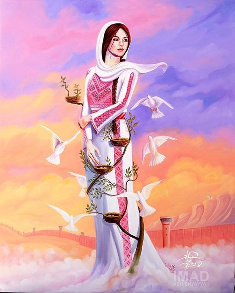

"Every stone tells a story, and every corner whispers the echoes of its people's struggle for freedom and justice."
The Canvas of Culture
The Thoub, a traditional Palestinian dress, serves as a living canvas. Each stitch is a language, a code that reveals the wearer's origins—from the vibrant motifs of Ramallah to the intricate stars of Bethlehem.
Passed down through generations, these patterns are not just decoration; they are a testament to endurance, preserving the rich tapestry of Palestinian heritage against the test of time.
